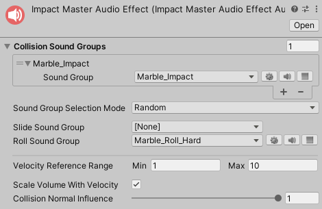
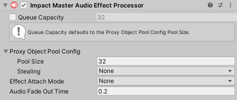

Master Audio Integration
Impact CFX features an optional package for integrating with Master Audio 2022. This allows you to utilize Master Audio 2022 for playing audio effects.
Setup
The only setup required is downloading and importing the Impact CFX Master Audio Integration package.
Impact CFX 1.4.1+
Master Audio 2022 Version: 1.0.4
Master Audio Effect
The Impact CFX Master Audio integration introduces the Master Audio Effect. This effect should be used instead of the built-in Audio Effect. You can create a new Master Audio Effect by going to .
The Master Audio Effect is similar to the built-in Audio Effect, but uses Master Audio Sound Groups instead of Audio Clips.
Master Audio Effects can have a list of sound groups to play on collision. There are 2 modes that can be used to select which sound group to use:
- Random – Select a random sound group from the list.
- Velocity – Select a sound group based on the collision velocity, where the first element is the lowest velocity, and the last element is the highest velocity.
Of course, you can choose to only use a single sound group for your collisions.
In addition to the collision sound groups, you can assign sound groups to Slide Sound Group and Roll Sound Group to use when the object is sliding or rolling. These sounds should be looped.
Master Audio Effects have the following additional properties:
- Velocity Reference Range – Collision velocities will be converted to a normalized (0 to 1) value based on this range and the Collision Normal Influence. The normalized value will then be used with the Scale Volume With Velocity property. Note that if the collision velocity is less than the minimum value of the range, no effect will be played.
- Scale Volume With Velocity – If checked, the output volume will be multiplied based on the input velocity. The value to multiply by comes from the Volume Scale Curve.
- Collision Normal Influence – How much the input normal will effect the calculated intensity of the collision. This can be used so that grazing collisions will have a low volume even if they have a high velocity.
Master Audio Effect Processor
Like all other effects, the Master Audio Effect requires a processor component, the Master Audio Effect Processor You can create this component by going to . Make sure that you add this processor to the Impact Effect Processors list on your Impact CFX Manager.
The Master Audio Effect Processor has the following properties:
- Queue Capacity – The maximum number of effects that can be processed in a frame.
- Proxy Object Pool Config – This integration uses empty game objects that manage each Master Audio effect instance.
This property controls the object pool used for these empty game objects.
- Pool Size – The size of the object pool. This effectively defines how many effects can be active simultaneously.
- Stealing – The behavior for stealing when all of the objects are in use.
- Effect Attach Mode – Defines what object involved in the collision, if any, the effect should attach to.
This can be useful for long collision effects that you want to follow an object.
See Managing Attached Effects for more info on how to properly manage attached effects.
- None – Don't attach to an object.
- This Object – Attach to the object that triggered the effect, if it is present.
- Other Object – Attach to the object that was collided with, if it is present.
- Audio Fade Out Time – For sliding and rolling effects, how long the audio takes to fade out once sliding/rolling has stopped.